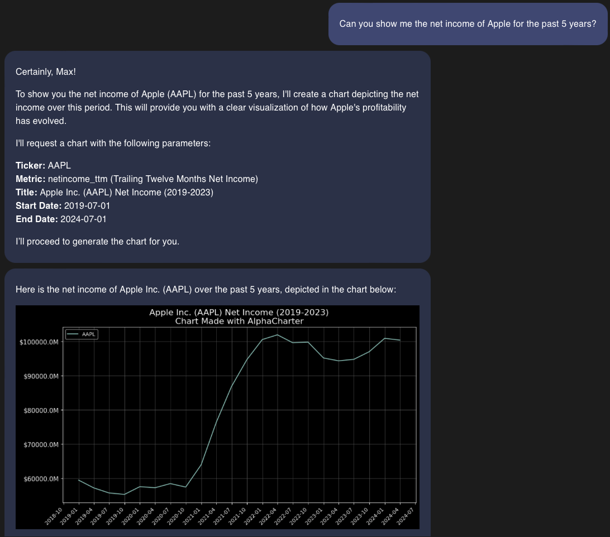
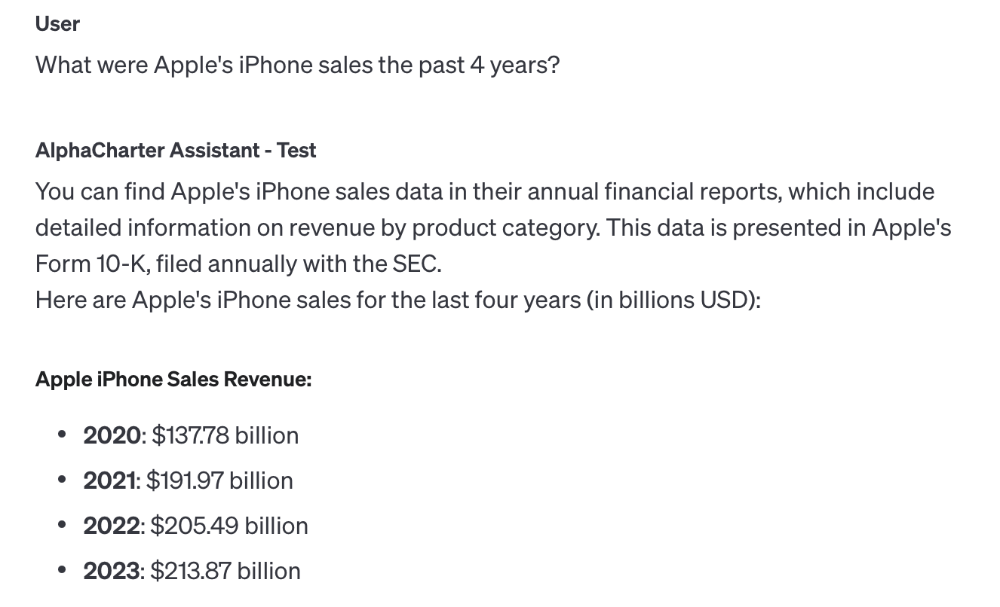

AI in Your Earnings Calls
Building a RAG app to decipher corporate earnings calls
Introduction
In my last post I introduced my AI financial assistant in AlphaCharter. With AlphaCharter you can analyze fundamental data from any public company along with their market cap and price in order to see things like historical PE ratios, EV/EBITDA, Free Cash Flow, Operating Margin, and many more (literally any combination of fundamentals). The way I do this is by giving an instructed AI model access to the balance sheets, income statements, and cash flows of all listed companies. Public companies have to report those general accounting metrics like revenue, cash from financing, long term debt, etc which are audited and reported to the SEC. From those numbers the AI can create metrics and ratios that are compared across companies in order for you to visualize them. 📈
If you want to go deeper on a company's products, regional performance, or plans for the future, that data isn't available in the quarterly financial statements. A lot of this is said in their conference call however, among other interesting points about the company.
In order to access the data from conference calls I built a feature into AlphaCharter to allow you to explore this information right in your chat. In order to access conference call data efficiently I used an AI adjacent technology called vector search in order to enable “Retrieval Augmented Generation.” In this post I will show the benefits of this feature, how it works, and then I'll show the how with some of the code I used. The entire example python notebook 🐍📒 is here.
iAnalyst
To show why you would want access to data from the earnings call, imagine you're someone interesting in investing in Apple ($AAPL). AlphaCharter can already provide you data on things like their earnings and revenue growth.
AlphaCharter can generate and plot the headline numbers as well as ratios from anything in the financial statements. You can take that $100 Billion number and add back things like operating expenses ($55B), taxes ($17B), cost of goods ($207B) to get to revenue ($381B). Or you could look at it's net income over its market cap (P/E ratio) and compare it to other competitors, there's a lot you could do with the data currently in AlphaCharter 📊. But what about things specific to Apple, like iPhone revenue?
While iPhone revenue is an important number to Apple investors, it's not required by the SEC. The leadership does give us an update on their business every quarter in the earnings conference call where they say things like iPhone revenue or what is driving sales or earnings growth. It's an important way for us as interested investors to find out more about the company from beyond just those headline numbers. Every quarter, companies have to give a conference call to announce these headline numbers and give even more information to those that are listening.
Conference 📞 Data
In this call Tim Apple 🍎 or one of his siblings like Luca Apple 🍏 will talk about offer talking points like how great “Apple Intelligence” is but they also provide very tangible numbers that may interest a lot of investors. Last quarter they called out that iPhone revenue was $46B and down 10% from the year before. But this information was only said audibly and not in their earnings report so AlphaCharter can't make charts of it (yet). If only there was a way to turn audio conversations into text.
There is, it's just listening while typing, and financial analysts have been doing it for decades. This information is accessible (with $$) in various financial tools. If you thought I was about to pitch AI transcriptions, how dare you. While that's an obvious use for AI the transcripts for earnings calls are already available so our innovation will be about what we do with those transcripts rather than creating them which is already solved.
These transcripts may be accessible but they're not easy to use without an expensive solution like Bloomberg. Even if the text is accessible ‘ctrl+f' is about the only innovation in the last 20 years to parse the long winded executives' monologues. What I wanted to do was request and access only the relevant data from these calls so you could answer questions like “what was iPhone revenue this quarter?”
The data contained in these conference calls is incredibly valuable to investors, it just currently takes a lot of effort to parse it, especially for those that don't have this as a full time job. Luckily AI has brought us a solution for parsing and finding exactly what you want in earnings call transcripts.
Hey AI, what does this say?
To show how valuable using AI can be you can take a call transcript and copy and paste it into a chatbot like ChatGPT or Claude and then ask something like what was iPhone revenue this quarter, you will get exactly the answer you're looking for.
Doing this is much faster than reading the whole thing and it allows you to ask follow up questions and use the general knowledge of an LLM. In order to copy and paste these transcripts the use has to have access to this data to start with, and copy and pasting is not the most user friendly experience. What if our AI assistant knew to just go retrieve the transcripts and read it when you ask so that it can answer that question for you? That would be awesome and very doable but it there are ways to improve this even further.
Apple's last earnings call transcript is 8,000 words long, or 10,000 “tokens” 🪙 for the way AI measures input length. If our AI assistant went and grabbed a transcript automatically based on our prompt that would mean a lot of text has to be read to find one mention and to answer a simple question. AI models can't take unlimited input text and have a concept of a “context window” that is the maximum amount of input information they can handle. GPT-4o has a 128,000 token context window which means that at most we can only give it 12 transcripts, that sound like a lot until you realize a question like “what are iPhone revenues of the past 4 years?” wouldn't work.
We only want a few lines from each transcript, if only there was a way to get just the relevant section and do this more efficiently. Thanks to AI (and tokenization and vectors and linear algebra) we can do just that.
Vectorize this
I won't go into much detail on tokenization and vector math here to keep this simple, the key points are that the way AI interprets text is through turning text into “tokens” (roughly 1 word) which can be represented as a matrix of numbers. These numbers can be dependent on the previous words to enable context so that “drone bee” is more similar to “worker ant” than “predator drone” which might be closer to “Apache helicopter” and so on. These matrices can be compared to each other so that we can find similar tokens in larger text.
3 Blue 1 Brown did a great video on this concept if you're interested and want to learn more:
This video is really, really, good and helps understand how AI models work. He has a whole series as well.
To apply this concept of vectors to our problem, what we are doing is instead of taking an entire transcript and having AI read and and answer a question, we want to give our AI model text similar to our question by finding sections that are most similar to our problem.
In order to do these comparisons we take our database of call transcripts and “tokenize” it and then “chunk” (break into pieces) the tokens and put them as rows in a database. Each row of the database now contains a section of text that we can more easily query for similar text.
In order to find the relevant sections we can do a “vector query” against our entire database of transcripts. If our query is “iPhone revenue” and we filter to only Apple transcripts in the past 4 years we can get chunks of text that are most similar to “iPhone revenue” which might include times Tim Apple said “iPhone sales” or “handset revenue” or things similar to that. It does this by comparing the vector of our query to all the chunks of data from the Apple transcripts. So this is much better than doing a crtl+f on a bunch of web pages.
Now that we have our relevant chunks of text, we can pass just those to our AI model which makes our prompt much more manageable.
These queries are also much less computationally intensive than an AI prompt and allow us to search HUGE amounts of text (like every public company's earnings transcript for the last 10 years) to get only relevant data and supercharge our AI app. So it helps save on my costs as well, a major concern for all.
AI, but it's smarter
Now all in one app you can ask something as specific as “what has iPhone revenue been over the past 5 years?” And our AI app can ask for transcript sections that are similar to the phrase “iPhone revenue,” put those sections into the AI's context and spit out an answer for you:
This type of AI use is called Retrieval Augmented Generation (RAG) because we are retrieving some text before we generate an answer. We created a database of our transcripts that allows our AI to more efficiently query for relevant sections of text, put that in our AI prompt as context, and allow our answer to be very precise and sourced from real data reducing the possibility our AI model makes something up and "hallucinate."
Having this feature in AlphaCharter allows anyone to do days of stock research in only a few minutes and help you along the way. You could start with a question about Apple's earnings growth, then see their revenue growth to get an idea if their sales are increasing more than expenses, then you could see what's driving that and ask about iPhone revenue and services revenue, and suddenly you know more about Apple than all wall street analysts put together. Maybe you're less of a prick too!
The Code
Ok non technical people can stop reading now, everything else will just be about how I did this and what technologies are needed. I put everything in a simple python notebook here as well but I will describe the process below. This will be to replicate the same example that I have above, we'll load Apple transcripts (but the code will be for any company) as an index, we'll query the index we create to prove it works, and then we'll define and write a function and a definition for the OpenAI API to use. This process will allow us to be able to ask our AI assistant what Apple's iPhone sales have been and get an accurate answer sourced from earnings transcripts.
Most of this example code is pieced together from OpenAI's cookbook as well as PineconeDB's docs and cookbook.
Prepare the data
I don't have any tips and tricks to get all earnings call transcripts for all time, but they are out there. So this assumes you found or paid for them and saved them as json files. Most of the 🪄magic✨ is in what you do with this text anyway so the focus is on that.
In order to split or “chunk” the data we need a way to divide the text so that we can make each chunk equal in size. We'll define a token length function so that we can count the length in tokens of our text, and then we will make a text splitter function to divide it easily. The tokenizer will be from the 'tiktoken' library and the text splitter from 'langchain.text_splitter'.
import tiktoken
from langchain.text_splitter import RecursiveCharacterTextSplitter
# get encoding model for preferred model
tokenizer_name = tiktoken.encoding_for_model('gpt-4o')
tokenizer = tiktoken.get_encoding(tokenizer_name.name)
# create the length function
def tiktoken_len(text):
tokens = tokenizer.encode(
text,
disallowed_special=()
)
return len(tokens)
text_splitter = RecursiveCharacterTextSplitter(
chunk_size=500,
chunk_overlap=20,
length_function=tiktoken_len,
separators=["\n\n", "\n", " ", ""]
)With our defined function we will make a list that contains all of the chunks of data. We'll attach metadata to each chunk we make so that we can access and filter it easily when we load it into an index. For metadata we'll make sure we have the stock symbol, the date of the transcript, the year, the quarter it's for, which consecutive chunk it is of the transcript, and using that info we'll make an id for each text chunk.
# create individual chunks from full text
chunks = []
for page in tqdm(aapl_transcripts[0]):
if len(page['content']) < 200:
# if page content is short we can skip
continue
texts = text_splitter.split_text(page['content'])
timestamp
date_obj = datetime.strptime(page['date'], '%Y-%m-%d %H:%M:%S')
timestamp = int(date_obj.timestamp())
chunks.extend([{
'id': f"{page['symbol']}_{page['year']}Q{page['quarter']}_{i}",
'text': texts[i],
'symbol': page['symbol'],
'date': timestamp,
'chunk': i
} for i in range(len(texts))])
Defining our index
We also need to define how we're going to embed this text, or how we're going to turn our text into a vectors that we can compare. Embedding is the act of turning our text into the matrix of numbers that tell an AI what they mean. This is what we're actually storing in our Pinecone index so that we can query it for similar chunks. We're using OpenAI models here so we specify their embedding model and their embedding function.
# openAI client
from openai import OpenAI
client = OpenAI(api_key='')
# turn text into embedding vector
embed_model = "text-embedding-3-small"
res = client.embeddings.create(
input=[
"Sample document text goes here",
"there will be several phrases in each batch"
], model=embed_model
)
We do embed a sample just so we can see the length of the vector, this allows us to do our next step… creating a Pinecone index. First we'll set the configuration for this index.
from pinecone import Pinecone, ServerlessSpec
pc = Pinecone(api_key='')
cloud = os.environ.get('PINECONE_CLOUD') or 'aws'
region = os.environ.get('PINECONE_REGION') or 'us-east-1'
spec = ServerlessSpec(cloud=cloud, region=region)
index_name = 'earnings-transcripts'
# check if index already exists (it shouldn't if this is first time)
if index_name not in pc.list_indexes().names():
# if does not exist, create index
pc.create_index(
index_name,
dimension=len(res.data[0].embedding),
metric='cosine',
spec=spec
)
# wait for index to be initialized
while not pc.describe_index(index_name).status['ready']:
time.sleep(1)
# connect to index
index = pc.Index(index_name)
Now we've created a serverless Pincecone index we can upload our data to with the vector parameters of the models we're using. One variable to note here is the 'metric' when creating the index is the method used to find the distance between two vectors. Pinecone has a good description of the different functions here. The choice of metric is very easy though in that it's whatever metric was used in the embedding model. In this case, OpenAI's 'text-embedding-3-small' uses cosine similarity, so we specify cosine here.
Inserting vectors
With our chunks of text and our index defined we can now write our data. We'll do this in batches and be able to watch the progress with tqdm.
batch_size = 100 # how many embeddings we create and insert at once
for i in tqdm(range(0, len(chunks), batch_size)):
# find end of batch
i_end = min(len(chunks), i+batch_size)
meta_batch = chunks[i:i_end]
# get ids
ids_batch = [x['id'] for x in meta_batch]
# get texts to encode
texts = [x['text'] for x in meta_batch]
# create embeddings (try-except added to avoid RateLimitError)
try:
res = client.embeddings.create(input=texts, model=embed_model)
except:
done = False
while not done:
time.sleep(5)
try:
# create embed of text
res = client.embeddings.create(input=texts, model=embed_model)
done = True
except:
pass
embeds = [record.embedding for record in res.data]
# cleanup metadata
meta_batch = [{
'text': x['text'],
'chunk': x['chunk'],
'symbol': x['symbol'],
'date': x['date'],
'id': x['id']
} for x in meta_batch]
to_upsert = list(zip(ids_batch, embeds, meta_batch))
# upsert to Pinecone
index.upsert(vectors=to_upsert)
We split our data into groups of 100, embedded each chunk and assigned metadata which we then “upsert-ed” to our index so now all of these Apple transcripts live there.
Test query
Let's see what a sample query looks like to confirm what we've done works.
query = 'iPhone sales'
res = client.embeddings.create(
input=[query],
model='text-embedding-3-small'
)
# retrieve from Pinecone
xq = res.data[0].embedding
# get relevant contexts with filter on metadata
after_timestamp = datetime(2024,1,1).timestamp()
res = index.query(
vector=xq,
top_k=5,
filter={'date': {'$gt': after_timestamp}},
include_metadata=True
)
res['matches']
From this we can see the process where we take some text as our query, we embed it to turn it into a vector, define some additional metadata filters, and query the index. Here is a snippet of our matches:
[{'id': 'AAPL_2024Q1_6',
'metadata': {'chunk': 6.0,
'date': 1706847422.0,
'id': 'AAPL_2024Q1_6',
'symbol': 'AAPL',
'text': 'billion. Let me now provide more detail for each of our '
'revenue categories. iPhone revenue was $69.7 billion, '
'up 6% year-over-year. We set all-time records in '
'several countries and regions, including Latin America, '
'Western Europe, the Middle East, and Korea, as well as '
'December quarter records in India and Indonesia. Our '
'iPhone active installed base grew to a new all-time '
'high, and we had an all-time record number of iPhone '
'upgraders during the quarter. Customers are loving '
'their new iPhone 15 family, with the latest reports '
'from 451 Research indicating customer satisfaction of '
'99% in the U.S. In fact, many iPhone models were among '
'the top-selling smartphones around the world during the '
'quarter. According to a survey from Kantar, iPhones '
'were four out of the top five models in the U.S. and '
'Japan, four out of the top six models in urban China '
'and the UK, and all top five models in Australia. Mac '
'generated revenue of $7.8 billion and return to growth, '
'despite one less week of sales this year. This '
'represents a significant acceleration from the '
...
'very strong at $39.9 billion. Let me now provide more '
'detail for each of our revenue categories. iPhone '
'revenue was'},
'score': 0.51140362,
'values': []}]
It looks like our response is exactly what was expected, 5 chunks of earnings call transcripts where Tim Apple is talking about iPhone revenue.
The context function
So now we know how to make an index, insert data to it, and then query that index for similar text. Let's make the querying now into one function that an AI assistant can call to autonomously retrieve earnings call context. We want a function where we can retrieve context from a certain query, but we also want to make sure we're filtering on the stock symbol to get the right company and the dates of the earnings call to make sure we're relevant to the original question. Asking "iPhone revenue for the past 5 years" we want to make sure we don't include a mention from ATT in 2010. The point of this function is to take predictable inputs and get predictable outputs that can be interpreted by an AI model. Here's our single python function:
def earnings_context(symbol: str, query: str, start_date: str, end_date: str = None):
# turn start/end dates to timestamp int for filter
start = datetime.strptime(start_date, "%Y-%m-%d").timestamp()
if end_date == None:
end = datetime.today().timestamp()
else:
end = datetime.strptime(end_date, "%Y-%m-%d").timestamp()
# embed query
xq = client.embeddings.create(
input=[query],
model="text-embedding-3-small"
).data[0].embedding
# vector search
res = index.query(
vector=xq,
top_k=5,
filter={
'symbol': {'$eq': symbol.upper()},
'date': {'$gt': start, '$lt': end}
},
include_metadata=True
)
# prepare return dictionary
matches = res['matches']
simplified_data = [{'date': item['metadata']['date'], 'chunk': item['metadata']['chunk'], 'text': item['metadata']['text']} for item in matches]
sorted_data = sorted(simplified_data, key=lambda x: (x['date'], x['chunk']))
for item in sorted_data:
item['date'] = datetime.fromtimestamp(item['date']).strftime('%Y-%m-%d')
return sorted_data
This function takes our query and some metadata filters to make sure we're getting the right thing, queries our index, and returns a simplified and sorted dictionary we can pass back to our AI assistant so that it knows the logical context it got from the function call.
In order to tell an OpenAI assistant what functions it can use we have to define a JSON schema that we'll attach to our assistant. This helps tell the AI model what the capabilities are of the tool you're using so that it can call this autonomously and get the most use out of it. Here is my function definition:
{
"name": "earnings_context",
"description": "Retrieves relevant text from a corporate earnings call transcript to aid in questions that need more specific information. This function takes a stock ticker symbol, a date range, and a query in order to retrieve relevant context from a corporate earnings call. The function retrieves 5 sections of transcript that are 500 tokens in length each.",
"parameters": {
"type": "object",
"properties": {
"symbol": {
"type": "string",
"description": "The stock ticker symbol for the company whos earnings transcript you want to retrieve context from."
},
"query": {
"type": "string",
"description": "The text query to search for sections of context that match. This uses token similarity in a vector search."
},
"start_date": {
"type": "string",
"description": "The minimum date of earnings calls you want context from."
},
"end_date:": {
"type": "string",
"description": "The maximum date for an earnings call you want context from. A default value of today is used if none specified."
}
},
"required": [
"symbol",
"query",
"start_date"
]
}
}
And that's it! Attach this function to an assistant or just use it when calling OpenAI's 'completions' and have it use our function to get only relevant context for answering your questions that can be answered by earnings calls. As far as costs go this is very cheap and much cheaper than passing entire transcripts to the AI model as well. Even if you didn't care about cost, passing only relevant data is a good way to reduce AI model hallucinations and improve accuracy. Plus it's cool. 😎
Areas to improve
There are a few ways I could see this improving, there are ways to make this more efficient cost and data wise as well as with be able to find more relevant and useful data.
- Have the assistant function specify how much context it wants
- Currently our function will retrieve the 5 most relevant chunks per query which could be overkill and not useful for some cases. If we used the example of iPhone revenue for the last 4 years it might be more useful to call this function for each quarter (20 times) and only get one chunk from each quarter given we're only interested in one line.
- The number of results 'k' would be a variable specified by the AI
- Better prompting could define how AI could use this tool
- Reducing the amount of data retrieval to save cost and time by only getting the id of the chunk.
- Currently the cost and time of this tool aren't concerning to me, but if I wanted to save on the amount of data read and stored in my index instead of providing the raw text and querying that I could just use the unique id. Then when I run my vector query I only receive an id which I use to retrieve that piece of text that I've stored somewhere else that might be faster and cheaper.
- Keyword extraction and smart paragraph breaks
- An AI model can be used to break the text into useful paragraphs or more cohesive chunks rather than 500 token groups. Keywords could also be extracted here so a paragraph about regional revenue performance could be more easily queried with 'regional performance', 'china', 'europe' as examples. Batch processing of AI model requests makes sense here.
- I played with this idea initially and saw that it wasn't adding much performance so I abandoned it.